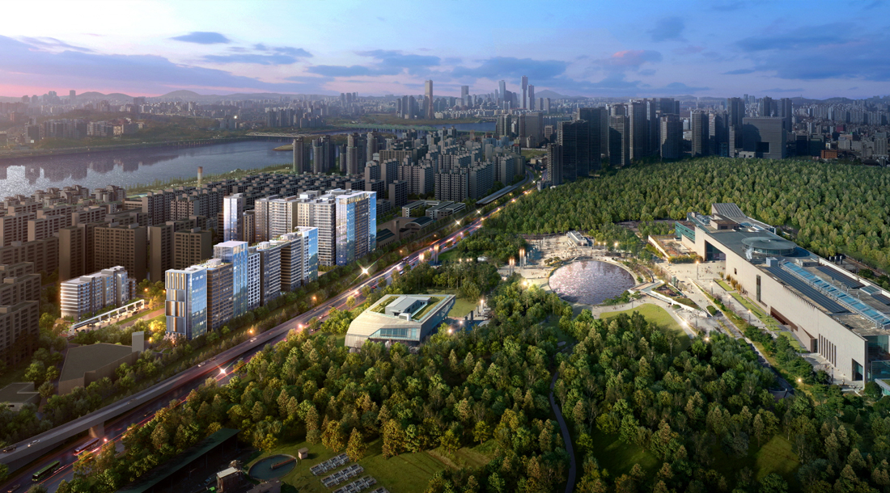

◇ 3월 16일 조합 비대면 총회 열고 삼성물산 시공사 선정
◇ 총 10개동 959세대로 리모델링, 공사비 4,476억원 규모
삼성물산 건설부문(대표이사 오세철)이 서울 용산구 이촌동 코오롱아파트 리모델링 사업(이하 이촌코오롱 리모델링)의 시공사로 선정됐다.
이촌코오롱리모델링조합은 16일 개최한 조합 총회에서 삼성물산을 시공사로 선정했다. 이촌코오롱 리모델링은 서울특별시 용산구 이촌동 412번지 일대에 지하6층~지상25층 규모 아파트 10개동 959세대와 부대복리시설 등을 조성하는 사업으로 공사비는 약 4,476억원이다.
이촌코오롱 리모델링 사업지는 국립중앙박물관, 용산가족공원, 이촌한강공원, 신용산초등학교, 용강중학교 등이 가깝고, 이촌역/서빙고역과 강변북로 접근이 편리한 지역에 위치해 있다.
삼성물산은 ‘래미안 이스트빌리지(East Village)’를 이촌코오롱 리모델링의 새로운 단지명으로 제안했다. ‘동부이촌’이라는 이름에 담긴 상징성을 계승하면서, 뉴욕 맨하탄 남부의 이스트빌리지처럼 트렌디하면서도 조용하고 고급스러운 동부이촌동의 지리적, 문화적 특징을 반영했다.
 삼성물산은 래미안 이스트빌리지만의 특화 디자인을 적용하여 조합원들의 지지를 받았다. 용산가족공원이 인접한 단지의 특성을 반영해 스카이 커뮤니티를 조성하고, 거실의 방향을 공원 쪽으로 배치해 집 안에서도 탁 트인 조망을 즐길 수 있도록 했다.
삼성물산은 래미안 이스트빌리지만의 특화 디자인을 적용하여 조합원들의 지지를 받았다. 용산가족공원이 인접한 단지의 특성을 반영해 스카이 커뮤니티를 조성하고, 거실의 방향을 공원 쪽으로 배치해 집 안에서도 탁 트인 조망을 즐길 수 있도록 했다.
외관에는 측벽 아트파사드 디자인과 수직성을 강조한 커튼월룩을 적용하였으며, 문주와 스트리트형 조형물, 조경을 통합 디자인했다. 특히 메인 문주의 경우, 별빛을 형상화한 조명계획으로 단지의 상징이 될 수 있도록 제안했다.
세계조경가협회상(IFLA Awards) 11회 수상에 빛나는 래미안만의 특별한 조경도 눈에 띈다. 광활한 용산공원을 담은 ‘그랜드 포레스트’, 공원뷰의 특권을 누리는 옥상정원 ‘스카이 파크뷰’, 휴양지에 온 듯한 느낌의 ‘힐링 스퀘어’를 래미안 이스트빌리지만의 조경 콘셉트로 공개했다.

삼성물산은 2005년 래미안 방배 에버뉴, 2014년 래미안 대치 하이스턴, 래미안 청담 로이뷰 준공 등 다수의 리모델링 사업경험을 바탕으로 이촌코오롱 리모델링 또한 성공적으로 추진할 계획이다. 삼성물산은 지난해 고덕아남 리모델링과 금호벽산 리모델링 시공권을 확보했으며, 올해는 이촌코오롱 리모델링을 시작으로 다수의 리모델링 프로젝트에 입찰을 준비하고 있다.
삼성물산 관계자는 “래미안만의 차별화된 상품과 리모델링 사업 경험을 바탕으로 이촌코오롱 리모델링 사업의 가치와 위상을 높일 수 있는 파트너가 되도록 최선을 다 할 것”이라고 밝혔다.